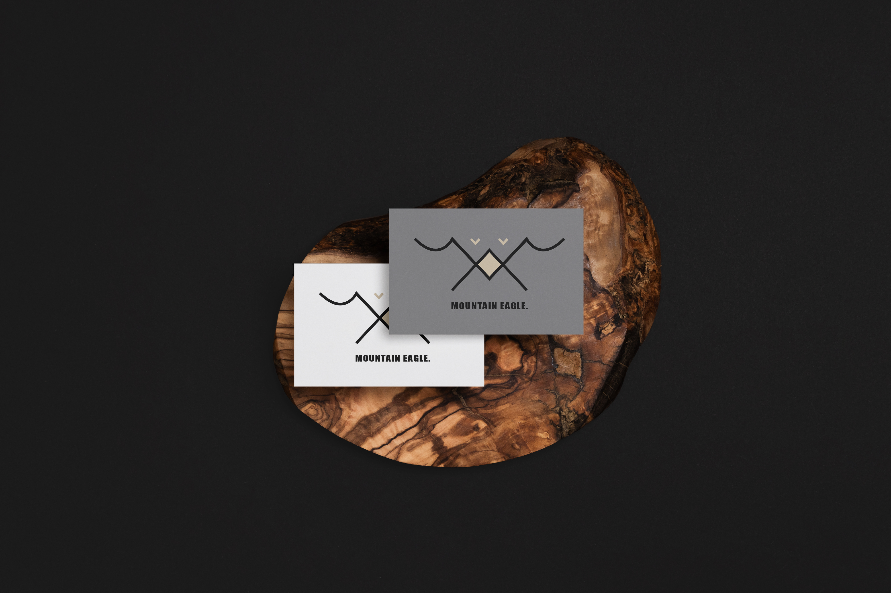
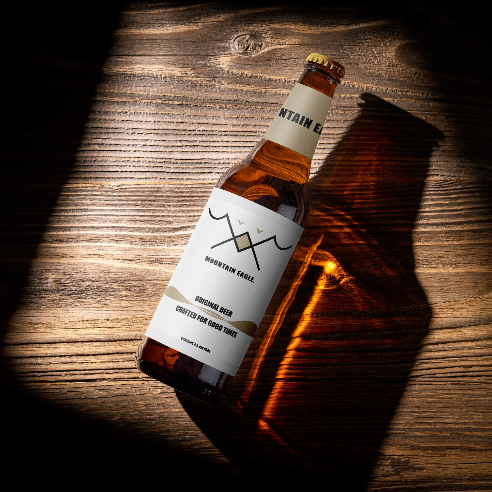
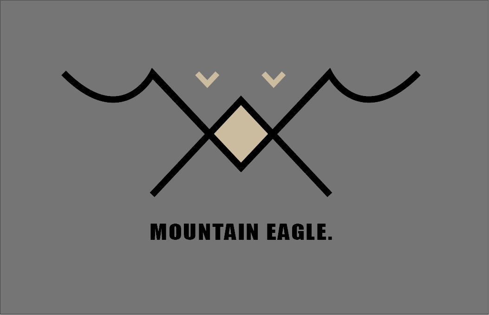

Návrh loga Mountain Eagle vznikl jako experiment s kombinací ostrých geometrických linií a přírodních motivů. Cílem bylo vytvořit symbol, který propojuje sílu horské krajiny s elegancí orla — dvou prvků, které společně vyvolávají pocit stability, tradice a dobrodružství. Logo pracuje s minimalistickým tvarem horských štítů a stylizovanou siluetou orla, což dohromady tvoří výraznou, snadno zapamatovatelnou vizuální identitu.

Pro prezentaci jsem zvolila mockupy na pivních lahvích, které logu dodávají charakter značky řemeslného piva. Kombinace přírodního motivu a čisté typografie působí autenticky a dobře zapadá do vizuálního stylu menších pivovarů, které často staví na tradici, kvalitě a silném příběhu. Logo tak funguje nejen jako abstraktní symbol, ale i jako plnohodnotný brandingový prvek, který může reprezentovat moderní pivní značku s důrazem na řemeslnost a originalitu.

Tento návrh prezentuje moji schopnost pracovat s abstrakcí, vytvářet vizuální symboly a hledat estetické řešení bez nutnosti konkrétního zadání. Je to ukázka volné tvorby, která rozvíjí cit pro tvar, barvu a vizuální harmonii.
